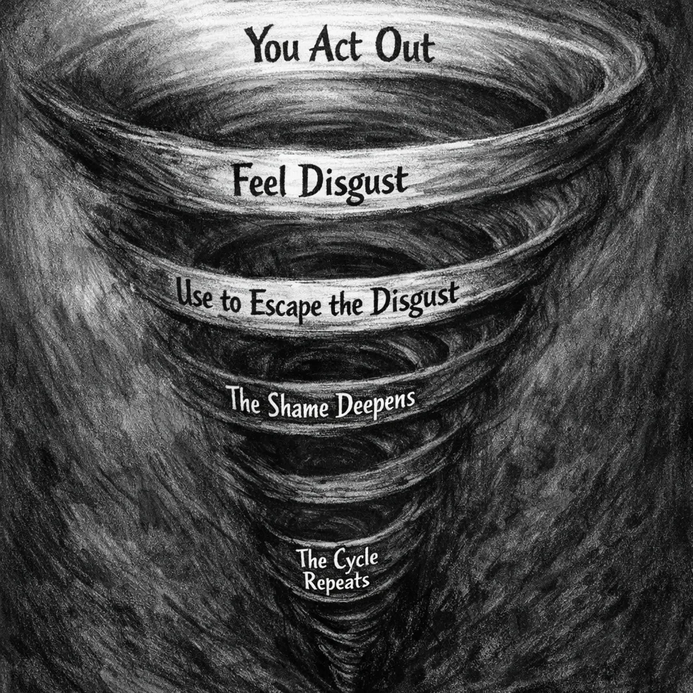
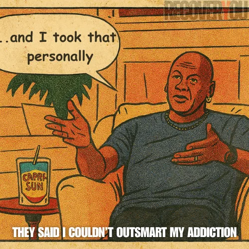

Most of us who grew up with trauma learned early that being ourselves wasn't safe. So we got very good at being someone else. We became whoever the room needed — for survival, for approval, for invisibility. We built a persona and played it so convincingly, for so long, that we stopped noticing it was a performance. We called it our personality. We called it resilience. We even called it "fine."
And there is a particular kind of pain waiting at the end of that work — the crushing weight of discovering your entire life was built on an identity that wasn't yours, and the slow, relentless work of finding out who you actually are underneath it.
But it was a mask.
And those masks are heavy.
At the height of my addiction I was running two lives simultaneously — and the gap between them was disorienting. By day, shaking hands and closing deals. By night, in the worst parts of town, drinking with dealers and homeless addicts — because they were the only people I didn't have to perform for. Their chaos felt more honest than the polished fiction of normal life. The mortgages, the families, the small talk — all of it felt like a script I was failing to memorize.
Living that way cracked something open at the center. Dissociation isn't dramatic — it's just the mind's way of surviving a split it can't resolve. That duality wasn't just untenable. It became unsurvivable. Something had to give.
Shame is the blueprint behind the False Self. Not the loud, visible kind — the quiet kind. The kind that moves into your bones long before you have language for it. Shame doesn't say, "You made a mistake." It says something far more corrosive:
Shame doesn't just accompany survival strategies — it fossilizes them into identity. It convinces you that the mask you wore to survive isn't something you can take off. It is your face now. And in addiction, shame doesn't lurk in the background. It runs the whole operation.
The cycle runs without mercy: You act out → you feel disgust → you use to escape the disgust → the shame deepens → the noose tightens. Shame takes everything you did to survive and reframes it as a résumé of character defects.
But here's what almost no one tells you — what took me decades to understand: the harmful things you did are not proof that you're harmful. They're proof you were hurting.
People carrying trauma know shame in their bones. People carrying both trauma and addiction know it twice over — shame for what was done to them, and shame for what they did to survive it.

When I look back at my using days — the wreckage, the scorched relationships, the version of myself I barely recognize — it's tempting to mistake the damage for my essence. But when I strip away the noise and look at motive, the truth cuts clean:
I wasn't trying to destroy. I was trying to stop drowning.
Every terrible choice came from the same desperate place: a frantic scramble for five minutes where I could just breathe.
Do I take responsibility for my actions? Absolutely. Were they wrong? Yes. But motive matters. Intent matters. If malice had been the engine, these memories wouldn't follow me like ghosts. The shame you feel now is proof that the person who did those things was never the real you.
That regret you carry. The weight in your chest. The way your stomach drops when you remember who you were.
That's not the voice of a bad person.
That's the voice of someone whose humanity survived — even when everything else was burning.
Your pain is not a punishment.
It's a compass — pointing back to the kind of person you're wired to be, and the kind of life you're still capable of building.
There is a moment in healing that almost no one warns you about — when shame doesn't dissolve so much as it shifts. Not into rage. Into something colder, steadier, and far more dangerous to the story that was written about you.
Shame turns violation inward. It asks, "What is wrong with me?" Righteous indignation refuses that question entirely and replaces it with one that actually points somewhere useful: "Why was this ever allowed to happen to me in the first place?"
This is not rage. Rage burns fast, consumes everything including you, and leaves the same wreckage it was trying to address. Righteous indignation is slower. Quieter. Far more durable. It doesn't destroy — it clarifies. It comes from the bone-deep recognition that something essential was violated, that a line was crossed that should never have been crossed — and that none of the weight of it was ever yours to carry.
Doing the trauma work finally gave me the distance to go back — not to relive it, but to see it clearly for the first time. And what I saw, stripped of the shame I'd been carrying since childhood, was simple and devastating in equal measure: it was them. It was never me. That realization didn't arrive like a revelation. It arrived like a verdict being quietly overturned after decades in the wrong hands.
So I went back for the one who was left there. The child. The teenager. The version of me who learned — early and thoroughly — to absorb blame that had never belonged to him. I went back and I made sure he knew. And I didn't leave him there again.
What came out the other side wasn't anger. It was something that felt, for the first time, like solid ground — the unshakeable knowledge that my worth was never the question, and that anyone who treated it as negotiable was wrong. Full stop.
Healing doesn't require forgiving what broke you.
It requires looking it in the eye and saying — clearly, without apology — that should never have happened.
And then letting that truth decide what you allow from here.
The false self is hard to spot — especially when you've worn it so long the mask and the face beneath it have started to feel like the same thing. Most people don't notice the mask. They notice what it costs: the exhaustion, the hollowness, the quiet and persistent sense that what's underneath isn't matching anything on the surface. The mask rarely comes off in a single dramatic moment. It starts by feeling heavy.
If addiction has one grim upside, it's this: eventually, it forces you to look. It dismantles enough of the scaffolding that you can't avoid what's underneath — what your life is actually built on, and what it's been missing all along.
So how do you know if you're carrying one? Here are some signs the weight you've been holding was never really yours:
If any of that landed — you're not broken. You're someone who adapted to circumstances that made the mask necessary. And this moment, right here, is where that starts to change. Awareness isn't the whole path. But nothing on the path happens before it.
The way out isn't more performing. It isn't pushing harder through the discomfort. And it is absolutely not more shame — which has already had more than enough time at the controls.
Healing means getting genuinely curious about who you are when no one's watching and nothing's at stake. It means slowing down long enough to hear your own voice again — not the critic, not the version of you that learned to keep everyone comfortable, not the performer who got very good at reading the room. Just you. The one who's been waiting underneath all of that for longer than you probably realize.
For those carrying complex trauma, having a therapist or professional alongside this process isn't optional extras — it's often the difference between circling the same drain and actually moving. You don't have to do this alone. More importantly: you probably shouldn't.
For me, the path runs through writing...
Reclaiming your true self means uncovering what you were forced to silence. Here's what that looked like for me.
Growing up, my brain ran on complexity. I took machines apart, mapped systems, found the inefficiency and removed it. That wasn't a hobby. It was the one place in the world where I made complete sense to myself.
But complexity wasn't just unwelcome in a chaotic home — it was treated as a liability everywhere I went. School. Relationships. Work. I once had a boss pull me into a meeting because people were "frustrated" with me. Not my performance. Not my output. My vocabulary. It made them uncomfortable enough to escalate it. To make it a formal conversation. To sit across a desk and explain to me, with genuine concern, that the way I think was a problem for the room.
Same message. Different rooms with better lighting:
Every environment. Every room. Every relationship. The instruction was always some version of the same thing: Be smaller. Be simpler. Be less. And I did. Because that's what trauma teaches with ruthless, patient efficiency — that the cost of taking up your full space is too high to keep paying.
In recovery, it found a sharper edge. The line that followed me the longest — delivered not with cruelty but with the confidence of someone who had decided their experience was also the blueprint for mine: "You can't outthink your addiction. Look where all that thinking got you."
What it really meant was: "I couldn't think my way out of this — so I've decided that thinking is the enemy. And since you're here too, that must apply to you as well." It came out like a ceiling being installed. And I nearly let them put it in.
What I understand now — and what took far too long to land — is that none of it had anything to do with my capacity. It was a reflection of theirs. My way of moving through the world unsettled people who needed things to stay contained. So I did what shame had trained me to do with years of reliable practice: I shrank. I softened. I played dumb. I made myself smaller so other people could feel less threatened. It kept the peace. The cost was everything I actually was.
Real integration meant going back into the wreckage and pulling those parts out by hand. The analytical mind. The pattern-seeker. The part that needs to understand the architecture beneath the surface before trusting anything built on top of it. These were never the problem. They were always the foundation. My foundation. The thing that — when I finally stopped apologizing for it — turned out to be exactly what recovery required.

The image references the "and I took that personally" meme, originating from The Last Dance (ESPN/Netflix, 2020), modified here for commentary on recovery and cognitive agency. Michael Jordan is not affiliated with or endorsing this site or its content in any way.
*Modified image used solely to illustrate a behavioural pattern in the context of addiction recovery education — not to reproduce, distribute, or substitute for the original work. All rights remain with the respective copyright holders.
So when they told me I was overthinking my own recovery. When they insisted it was simple — just work the steps, don't complicate it. When they treated curiosity like arrogance and depth like a character defect. When they said I'd never outthink something as big as addiction —
They were wrong. Not because I'm exceptional. Because they were applying their answer to my question — and those were never the same question. The thinking didn't cause the addiction. The unexamined pain did. And thinking — rigorously, honestly, without flinching — was exactly how I found my way through it. The mind they kept telling me to distrust was the one that ultimately saved me.
I listened quietly when they said it. And in that quiet, something solid came back online — not a new operating system. Not a better one. The original. The one that had been running in the background all along, waiting to be trusted again.
I didn't accept their version of me.
I stopped abandoning my own.
The mask wasn't a flaw. It was a feat of engineering — built under pressure, in real time, by someone who had no other options and no one showing them a better way. That performer, that chameleon, that unshakeable "strong one" — it read every room correctly. It adapted to conditions that had no business existing. It kept you alive in places that had no business asking that of you.
You don't tear that apart. You don't punish it for existing. You sit with it — and you show it, slowly, with evidence, that the danger has passed. That the strategies it built to keep you safe in that environment don't have to run the whole show anymore. That you are finally safe enough to lead yourself.
Integration, not elimination. All parts of you, finally working in the same direction.
Because you are not your trauma response. You are not the mask you wore to survive it. You are the one underneath — who held on, who remembered, and who was always worth fighting for.
Follow the next step in order, or branch out into related topics.
These references provide the foundational psychological and neurobiological context for the concepts of the False Self, toxic shame, and trauma-related grief. They are for educational context, not medical advice.